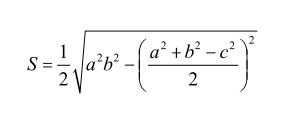
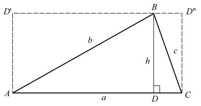
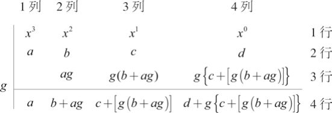
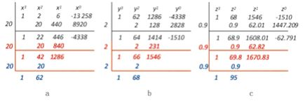

李冶在钧州率领金国将士血战蒙古骑兵的时候，一个二十四岁的年轻人正在南宋的临安过着逍遥自在的日子。他刚刚考上了进士，踌躇满志地筹划自己的仕途，并特意为自己取了一个号，叫作道古（效法古人行事的意思）。这个无比聪明的年轻人在当时人们的眼里，前途确实无可限量。但后来的事实证明，他的仕途并不顺利，而且留下很糟糕的名声。
道古出生在四川，父亲曾在巴州为官。后父亲因战乱带领全家迁至首都临安（今天的杭州）。几年工夫，父亲擢升工部郎中、秘书少监兼国史院编修官、实录院检讨官。由于父亲是掌管各项工程、屯田、水利、交通的工部郎中，又任国史院官职，掌管各类经籍图书，使道古得以接触学习各类知识。他的生性一定非同寻常的聪颖，因为很快他就对当时的种种学问，如星象、音乐、算术以及建筑学等无一不通。更重要的是，他还曾经向当时的隐士求教，学习数学。
他十八岁就当上了住地的义兵首，后到郪县（今天的四川绵阳附近）做县尉。有了进士身份以后，他更是仕途大展。几年内，他从湖北蕲州（今湖北蕲春县）通判擢升为和州（今安徽和县）知州，又赴建康府（今江苏南京）为官。眼见一切顺利，可就在这时，他的母亲去世了。按照规矩，凡是丧父丧母的官员必须解职守孝三至五年，这叫作丁忧。道古急赴临安吊丧，然后转回湖州老家。
13世纪上半叶，南宋小朝廷是在喜忧参半的心情下度过的。蒙古的崛起给南宋带来了极大的威胁，而金国又不断地骚扰，两国征战不绝。公元1234年，为了一雪北宋灭亡的靖康之耻，南宋朝廷派使者前往蒙古，双方结成联盟，共同对付金国。作为宋军援战的报酬，蒙古承诺灭金后把黄河以南的中原地带归还南宋。不久，蒙宋联军攻入金国首都汴梁，金哀宗完颜守绪（公元1198—公元1234）自缢身亡。指挥南宋盟军的大将孟珙（公元1195—公元1246）把金哀宗的尸骨带回临安，举国一片欢腾，人们竞相庆贺，一百年的耻辱终于以金国的灭亡而告终。可是金被灭以后，南宋的西部和北部直接暴露在蒙古的威胁面前。窝阔台可汗灭金后，立即撕毁了将黄河以南归还南宋的协议，强迫改为陈州、蔡州以北属蒙古，以南属南宋。这使南宋失去了黄河与长江之间的大片肥沃土地，也失去了黄河的屏障。南宋政府无力反抗，只能忍辱接受。从此，南宋的忧患越来越严重，蒙古骚扰不断，国无宁日。
按当时的规矩，丧母的道古不能从政，在湖州过了四五年平静的日子。我们不知道他都做了些什么，因为史书上没有记载。但是在宋理宗淳祐七年（公元1247年）的秋天，他突然刊出一本书来，名叫《数学大略》。书的前面有《序》一篇，对自己著书的经历有这样的描述：“时际兵难，历岁遥塞，不自意全。于矢石之间，更险离忧，荏苒十祀。”大意是说，在兵荒马乱的年代，交通不便，所以无法写得详细全面。这本书是在石雹箭雨当中写成的，期间充满了忧愁和艰险，又经过十年的修改才完成。这一年，道古三十九岁。也就是说，他是从二十九岁起就开始写这本书了。
这本书就是后来的《数书九章》，它在世界数学史上占有非常重要的位置。道古，大名秦九韶（公元1208—公元1261），也因此被称为中国历史上最伟大的数学家。
在这本书里，秦九韶有三项最重要的数学贡献。第一个贡献是所谓的秦九韶公式。《数书九章》第五卷有“三斜求积”一题。其中“三斜”为“大斜”“中斜”“小斜”，是三角形从大到小的三条边（图26）。秦九韶列出的任意三角形面积S的公式，用现在的代数语言表达是：


图 26：任意三角形 ABC，a 是大斜，b 是中斜，c 是小斜，也就是 a>b>c
这个公式的基本出发点是出入相补（又称以盈补虚）原理，它是中国数学中用于推证几何图形的面积或体积的基本原理。其内容如下：
1.一个几何图形，可以切割成任意多块任何形状的小图形，总面积或体积维持不变——所有小图形面积或体积之和。
2.一个几何图形，可以任意旋转、倒置、移动、复制，面积或体积不变。
3.多个几何图形，可以任意拼合，总面积或总体积不变。
4.几何图形与其复制图形拼合，总面积或总体积加倍。
出入相补原理是三国时代的数学家刘徽创建的。他说：“勾股各自乘，并而开方之，即弦。”这就是直角三角形的勾股定理。然后他又说：“勾自乘为朱方，股自乘为青方，另出入相补，各从其类，因就其余不移动也，合成弦方之幂，开方除之，即弦也。”
从图26，刘徽从B点作线段AC的垂线，交AC于点D，得到两个直角三角形ADB和BDC，它们的高相同，都是BD=h。现在复制三角形ABD，把它旋转180度，使得复制后的三角形和ABD的斜边重合，也就是图26中的三角形ABD′。由于这两个三角形都是直角三角形，它们的和是一个矩形ADBD′。同样复制直角三角形BDC，得到三角形BD″C，和矩形DCD″B。两个矩形的总和ACD″D′，其面积从古巴比伦和古埃及时代就知道了，是a×h；所以，三角形ABC的面积是(1/2)a×h。把复杂的几何形状转换为简单形状，然后求解，这其实跟海亚姆的“填充方块法”的思路是很类似的。秦九韶从这里导出用边长来表达的面积公式，具体做法，我们留给读者吧。
在欧洲，这个公式在希腊化时期就被亚历山大里亚的希罗（Hero of Alexandria，约公元10—公元70）明确地证明了，只不过表达方式不同。比希罗早两个世纪的阿基米德很可能就已经得到了这个结果。在中国，是秦九韶发现了这个公式。这是一个很重要的公式，因为任何一个n（n>3）边多边形都可以切割成n-2个三角形。有了这个公式，可以很容易地计算出任何n边多边形的面积。
秦九韶的第二个贡献是求解一元高次方程的数值解。秦九韶找到了一个通用解法，可以用于任何阶次的一元方程。在“遥测圆城”的题目下面，他利用筹算，求得一个一元十次方程的正数解。这个问题也同战争有关：在无法接近敌人城池的情况下，如何根据测量来计算城池的大小？假定城墙是圆环状的，秦九韶得到这样一个方程：
x10+15x8+72x6-864x4-11 664x2-34 992 = 0
其中x2是需要求得的城池的直径。秦九韶没有做x2=y之类的变量代换，而是直接摆开算筹来求这个方程的数值解，因为他有一套系统的求解方法。利用他的方法，可以很快求得x=3，因此圆城的直径是九里。他的方法已经跟现在应用数学中的计算程序非常接近，只不过是需要人来移动摆放算筹罢了。这个方法现在被称为秦九韶算法。
秦九韶的方法让后世的数学史专家们惊诧不已，因为它采用了五六百年以后才为人们所认识的数学原理和算法。跟他的前辈——中国和古埃及数学家一样，他拿起就用，不加证明。他对这些知识的熟悉程度是不言自明的。
首先是多项式余式定理：把任意一个n>1的多项式
Pn（x）=anxn+an-1xn-1+…+a1x+a0。除以（x-x0），所得的余数等于该多项式在x=x0时的值Pn（x0）。其次是综合除法的算法，也就是如何对任意多项式做除以（x-x0）的实际操作。
为了简单起见，我们只看三次多项式 P3(x)=ax3+bx2+cx+d。我们想把这个多项式除以（x-g），应该怎么做呢？见下面图27：

图 27：将三次多项式 P3（x）=ax3+bx2+cx+d 除以（x-g）的具体做法。这个方法叫作综合除法
先在第一行列出x的各个幂位（x3，x2，x；注意x0对应常数项）。在该行的左面画一条竖杠，把（x-g）中的数字g写在竖杠的左面，准备用它来做计算。把多项式x各个幂位的系数写在相应幂位的下方，作为第二行。留出一个空行（第三行），在第三行的下面画一条横杠。用g乘以第二行的第一个系数，也就是x3的系数a，得到ag，把它写在第三行对应x2那一列的位置。对该列第二行、第三行的数字（b和ag）做加法，把结果（b+ag）写在第四行该列的位置。下一步把这个结果（b+ag）乘上g，写到第三行第三列（对应x1那一列），对该列第二行、第三行两数做加法，得到c+[g(b+ag)]，把它写在第三列第四行的位置上。对第四列重复以上步骤，最终得到图27的结果。
为什么要这么做？请读者自己验证下面的等式：
P3(x)=(x-g)｛ax2+(b+ag)x+c+[g(b+ag)]｝+d+g｛c+[g(b+ag)]｝（14）
这个等式说明，通过图27的步骤，我们已经把P3（x）变成（x-g）和一个二次多项式P2(x)=ax2+(b+ag)x+c+[g(b+ag)] 的积再加上余式（或余数）d+g｛c+[g(b+ag)]｝。事实上，对第四行左面的三项所给出的二次多项式 ax2+(b+ag)x+c+[g(b+ag)]｝，还可以再除以（x-g）。得到的单次项还可以再除以（x-g）。这样，最终可以把（14）变成另一种表达方式：
P3(x)=a'y3+b'y2+c'y+d' （14a）
这里，y=x-g，带撇的系数是相应变化后的系数。
现在使用余式定理。根据这个定理，在x=g时，P3(g)=d+g｛c+[g(b+ag)]｝。所以，如果找到g，使d+g｛c+[g(b+ag)]｝=0 ，我们就找到了方程 ax3+bx2+cx+d=0的一个解。这样，我们对求解高阶方程有了一个出发点：把n阶方程看作n阶多项式，猜测一个近似解x=g，将n阶多项式化简为（x-g）乘以一个n-1阶多项式，使余数接近于零。如果第一个猜测解的余数大于零，试另外一个猜测解，直到找到一个猜测解，其余数小于零。有了最接近于零的两个猜测解，一个余数大于零，另一个余数小于零，方程的根就在这两个猜测解之间。
举个例子。考虑如下方程：
x3+2x2+6x-13 258=0 （15）
常数项是13 258，我们需要猜测一个近似解，使其三次方接近这个
数。粗略的猜测是一个介于20和30之间的数，因为，203=8000，小于13 258，303=27 000，大于13 258。把这两个猜测解代到方程（15）里，我们发现当x=20时，x3+2x2+6x-13 258<0，当x=30时，x3+2x2+6x-
13 258>0。于是我们肯定真正的解在这两个值之间。现在我们按照图27的步骤把上面的方程除以（x-20）=y（图28a）：
注意图28a中，我们对x3+2x2+6x-13 258以y=x-20连续做了三次除法，第一次除法跟图27完全一样，得到的最后一行黑色数字的前三项对应的是一个二项多项式x2+42x+1286，余数为-4338。红色的数字是把这个二项式除以y=x-20，得到的是单项式x+42，余数为1286。蓝色的数字是把x+42再除以y，得到余数62。这是什么意思呢？读者不妨自己验证一下，我们通过以上步骤，把原来的多项式x3+2x2+6x-13 258变成了y3+62y2+1286y-4338，这里y=x-20。

图 28：对多项式 x3+2x2+6x-13 258 做综合除法来求根的具体步骤。从列式的方式我们可以看到，它跟筹算的布列非常相近，只不过是把算筹换成了阿拉伯数字。秦九韶当然是利用算筹来解一元高次方程的。秦九韶也和李冶一样，用圆圈来表示零
我们已经知道x的根在20和30之间，所以现在要求的y的根一定是一个个位数。试一下y=5，发现余数是个很大的正数8105。再试y=4和3，余数都是正数。图28b是y=2的多项式除法，余数从y=3的正数变成负数。这样，我们得到（15）的近似到个位的解x=22。
当然还可以继续做下去。图28c是在做了另一个变换z=y-2以后，选择z=0.9的多项式除法。现在余数已经是很小的负数了。如果觉得x=22.9还不够精确，那就继续做下去。请读者验证，下一个数位的数值是0.03。
这个方法也很像计算机的程序，可以一直运算下去，直到达到满意的精度为止。更重要的是，它对方程的阶次没有限制。秦九韶解过一元10次方程，而实际上任何阶次的方程它都能解。唯一的缺点是它给不出普遍的公式，只能提供数值解。他还给这个方法取了个漂亮的名字，叫玲珑开方术。
在欧洲，这个绝妙的计算方法要到五百多年后的19世纪上半叶才由英国数学家威廉·乔治·霍纳（William George Horner，公元1786—公元1837）提出来。数学家奥古斯都·德·摩根（Augustus De Morgan，公元1806—公元1871）曾经对霍纳的方法赞叹不已，说它“必使其发明人因发现此算法而置身于重要发明家之列”。但是不久，英国传教士伟烈亚力（Alexander Wylie，公元1815─公元1887）就对霍纳的发明权提出了质疑。他在公元1852年所著的《中国数学科学札记》中，详细介绍了秦九韶的玲珑开方术之后写道：“读者不难认出这就是霍纳在1819年发表的《求解所有次方程》论文中的结果……我以为应该对霍纳的发明权提出辩驳。欧洲的朋友们可能会觉得意外，一位来自天朝帝国的竞争者有更大的机会确立他的优先权。”